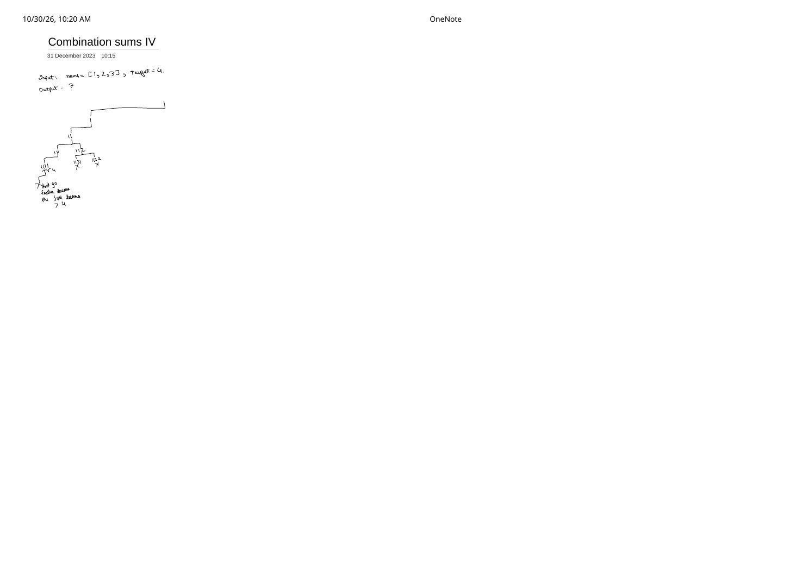

Combination Sum IV (LeetCode 377): When Ordered Backtracking Collapses Into 1D DP
Expanded from handwritten competitive coding study note: 08_Combination_sums_IV.pdf
Despite its name, Combination Sum IV actually counts ordered sequences (compositions / permutations with repetition) rather than unordered combinations! Studying it right after Combination Sum I–III reveals the exact moment when an exponential backtracking recursion tree acquires overlapping subproblems and collapses into a linear-space Dynamic Programming table.
Problem Statement
LeetCode 377 · Combination Sum IV
Given an array of distinct positive integers nums and a target integer target, return the number of possible combinations that add up to target. Note that different sequences are counted as different combinations.
Example from note: nums = [1, 2, 3], target = 4 → Output: 7:
(1, 1, 1, 1), (1, 1, 2), (1, 2, 1), (1, 3), (2, 1, 1), (2, 2), (3, 1).
Intuition: Restarting at Index 0 Creates Overlapping Subproblems
In 08_Combination_sums_IV.pdf, tracing nums = [1, 2, 3], target = 4 from the left branch 1 → 11 → 111 → 1111 (= 4) notes:
- Once a branch reaches or exceeds
4(such as1111 = 4, or trying112 → 1121 = 5and1122 = 6), “don't go further because the sum becomes $> 4$.” - Unlike Combination Sum I—where
[1, 2]could only pick $\ge 2$—here(1, 2, 1)is a valid new sequence! So every node must loop across allx in numsstarting from index0. - Because we only return the count (not the list of vectors!) and every node has the exact same choice pool
nums[0..n-1], the recursive state no longer depends on the prefix or current indexi—it depends solely on the remaining sumrem!
nums = [1, 2, 3], target = 35 visits over $10^9$ tree nodes and TLEs; with memo[rem], there are only 36 states!Brute → Top-Down Memo → Bottom-Up 1D DP Progression
Exact Recurrence Relation
$$f(0) = 1, \qquad f(\text{rem}) = \sum_{\substack{x \in \text{nums} \\ x \le \text{rem}}} f(\text{rem} - x) \quad \text{for } \text{rem} = 1, 2, \dots, \text{target}.$$Dry run on nums = [1, 2, 3], target = 4: $f(0) = 1$, $f(1) = f(0) = 1$, $f(2) = f(1) + f(0) = 2$, $f(3) = f(2) + f(1) + f(0) = 4$, $f(4) = f(3) + f(2) + f(1) = 4 + 2 + 1 = \mathbf{7}$.
- Outer loop over
rem = 1..target, inner loop overx in nums(here, LC 377): Every step at sumremcan end with anyx, so(1, 2)and(2, 1)both contribute todp[3]! - Outer loop over
x in nums, inner loop overrem = x..target(Coin Change II, LC 518): Processes all copies of1before any copy of2, counting only unordered combinations!
Clean C++ Implementations (Memoized Backtracking & Bottom-Up DP)
#include <algorithm>
#include <cstdint>
#include <vector>
using namespace std;
class Solution {
public:
// Approach 1: Top-down memoized recursion (backtracking + sorted sum cutoff + cache)
int combinationSum4Memo(vector<int>& nums, int target) {
sort(nums.begin(), nums.end());
vector<int> memo(target + 1, -1);
memo[0] = 1;
auto dfs = [&](auto& self, int rem) -> int {
if (memo[rem] != -1) return memo[rem];
long long ways = 0;
for (int x : nums) {
if (x > rem) break; // "don't go further because sum becomes > target"
ways += self(self, rem - x);
}
return memo[rem] = static_cast<int>(ways);
};
return dfs(dfs, target);
}
// Approach 2: Iterative bottom-up 1D DP (zero recursion stack)
// Note: unsigned int avoids signed overflow on intermediate unreachable states > INT_MAX
int combinationSum4(vector<int>& nums, int target) {
sort(nums.begin(), nums.end());
vector<uint32_t> dp(target + 1, 0);
dp[0] = 1;
for (int rem = 1; rem <= target; ++rem) {
for (int x : nums) {
if (x > rem) break;
dp[rem] += dp[rem - x];
}
}
return static_cast<int>(dp[target]);
}
};Complexity Proof & Negative-Number Follow-Up
- Pure Backtracking Time: $O\bigl(n^{\lceil \text{target}/m \rceil}\bigr)$ where $m = \min(\text{nums})$ (exponential—TLEs for $\text{target} \ge 35$).
- Memoized / 1D DP Time: $O(n \log n + \text{target} \cdot n)$—each of the $\text{target}$ states iterates over at most $n$ candidates once.
- Space Complexity: $O(\text{target})$ for the
dp/memoarray. - LeetCode Follow-Up — What if negative numbers are allowed in
nums? With both $+1$ and $-1$ innums, sequences like(1, -1, 1, -1, ..., target)can grow arbitrarily long so the count becomes infinite! To make the problem well-defined, we must impose a maximum sequence length $L_{\max}$ (turning the DP state into 2Ddp[len][sum]).
From the Handwritten Notes
View original handwritten page — 08_Combination_sums_IV.pdf (Page 1)


08_Combination_sums_IV.pdf, page 1: ordered-sequence trace on nums = [1, 2, 3], target = 4 → 7 showing branch cutoffs at 1111 = 4, 1121 ✗, and 1122 ✗ once the running sum exceeds 4.